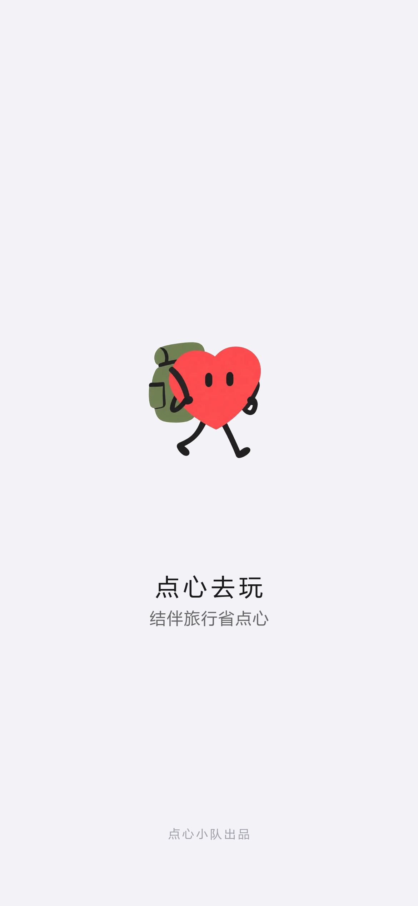

你的旅行偏好已设置
今日推荐
杭州热门好去处，一键加入当前行程
曲院风荷
夏日赏荷胜地，午后微风最舒服
小河直街
运河边的慢生活老街，咖啡馆林立
AI情绪伴侣
旅途中感觉怎么样？点一下，让我陪你

结伴旅行，省点心
登录后继续你的旅行计划
还没有账号？
注册一个新账号，开始省心旅行
已有账号？
这些偏好会帮助AI为你规划更合适的路线
习惯的出门时间
习惯的拍照时长
住宿条件的要求
大致的体能条件
特殊需求（可多选）
美食偏好
行程节奏
你的旅行偏好已设置
杭州热门好去处，一键加入当前行程
曲院风荷
夏日赏荷胜地，午后微风最舒服
小河直街
运河边的慢生活老街，咖啡馆林立
旅途中感觉怎么样？点一下，让我陪你
我
总花费
¥0
每人应付
¥0
参与人结算
费用明细
—
旅行偏好
尚未设置偏好
添加好友
演示版：支持 11 位手机号或邮箱，输入即可添加
好友列表
还没有好友，先添加一个吧～
点点 · 你的旅行伴侣
邀请好友加入当前行程
点击好友右侧按钮，直接邀请加入本行程
还没有好友，先在上方输入手机号或邮箱添加一个吧～